9 nights
Slovenia
Use the reviewed source leg’s preferred base pattern; property selection remains open.
A complete draft assembled from reviewed Slovenia and Malta destination legs, with the transfer, calendar, budget, and score recalculated for this pairing.
↓ Full day-by-day plan below


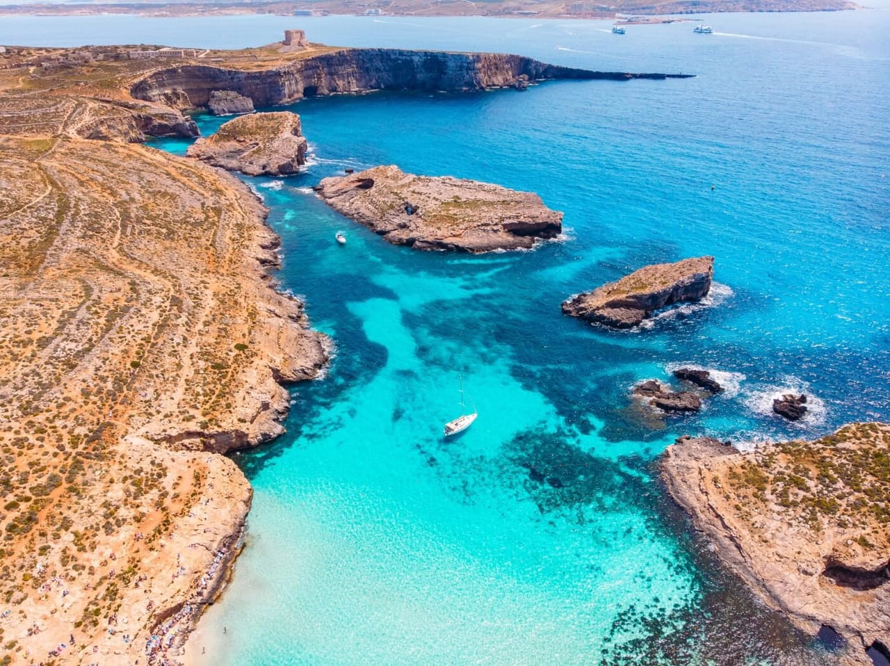
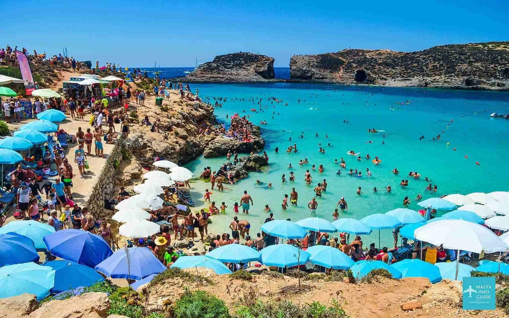
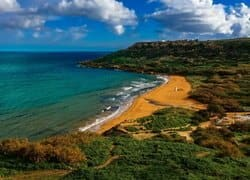


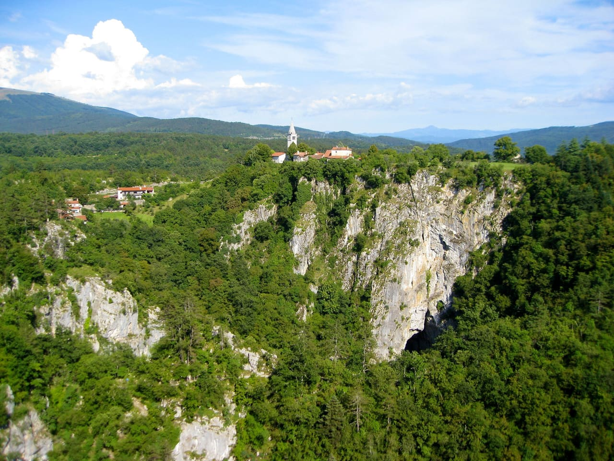
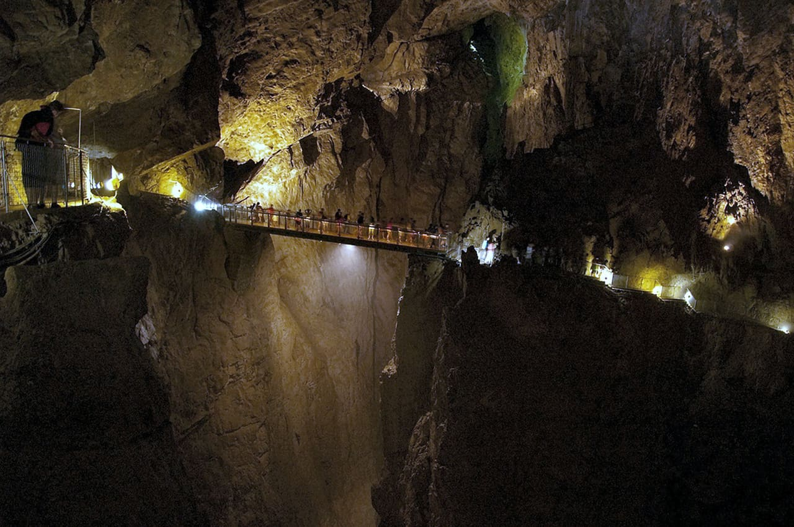
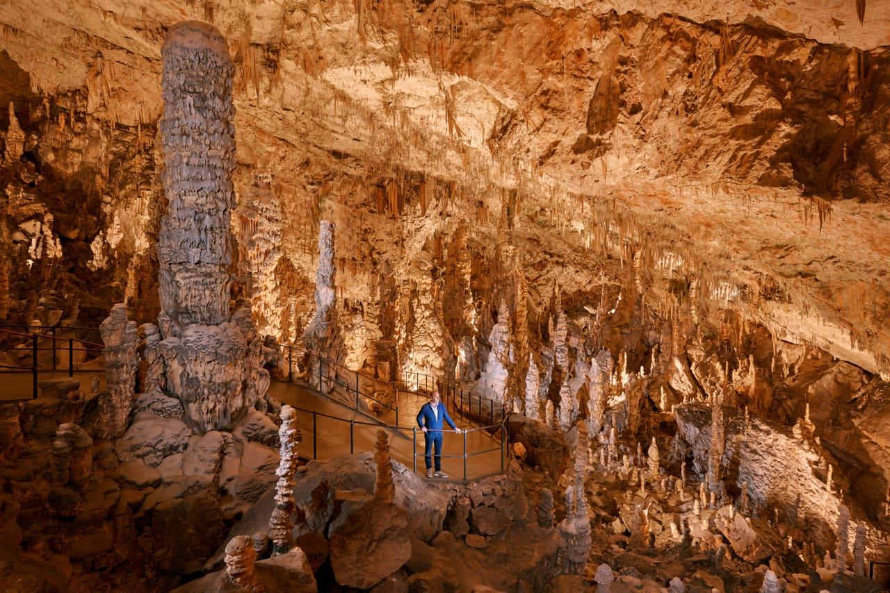
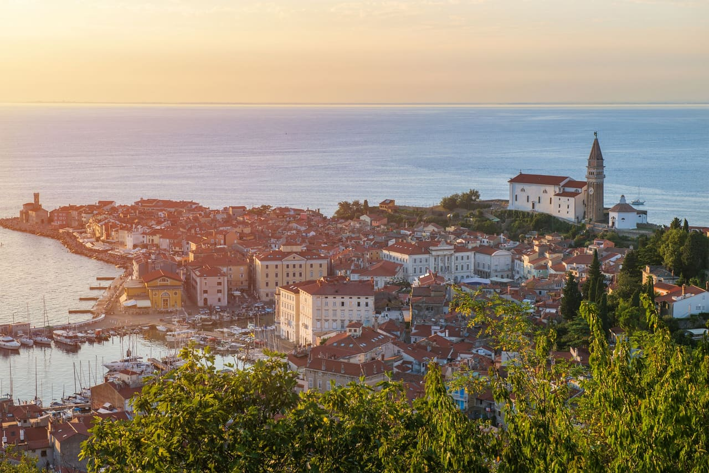
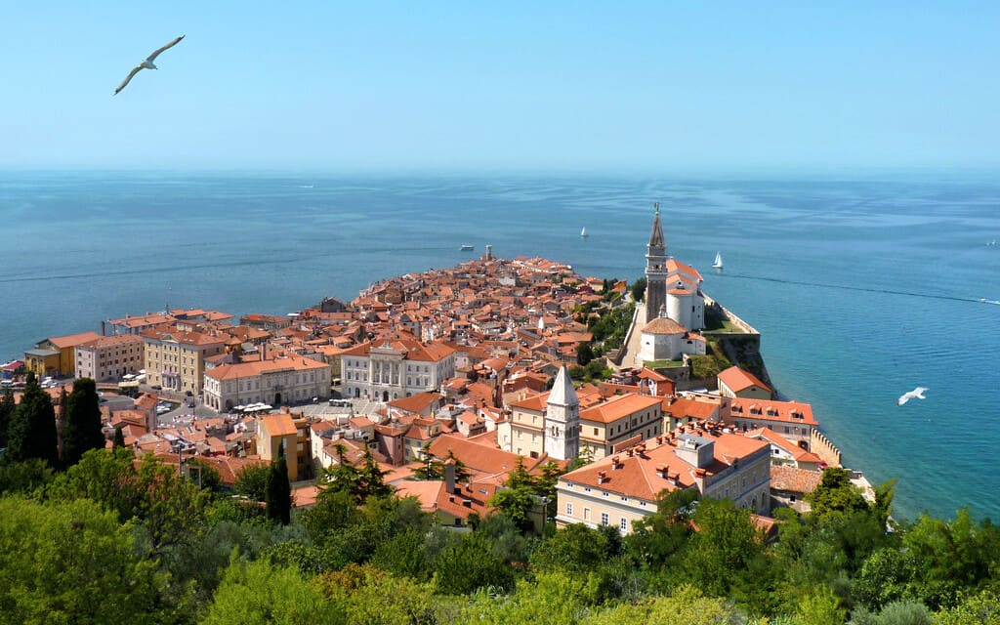
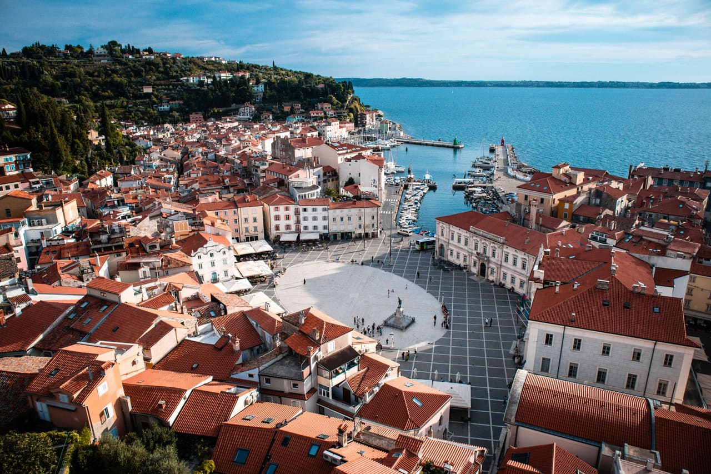
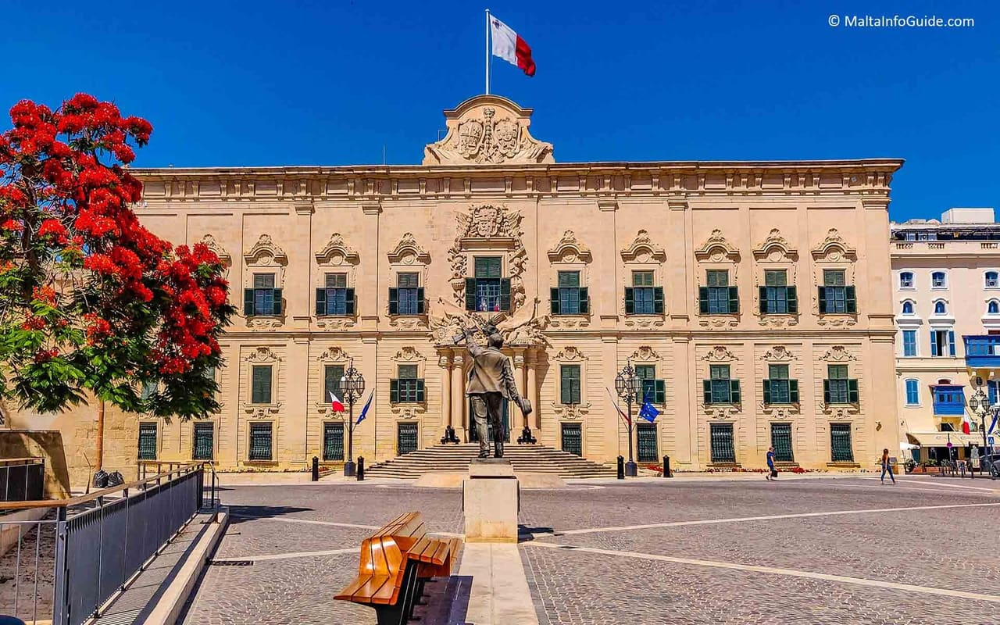
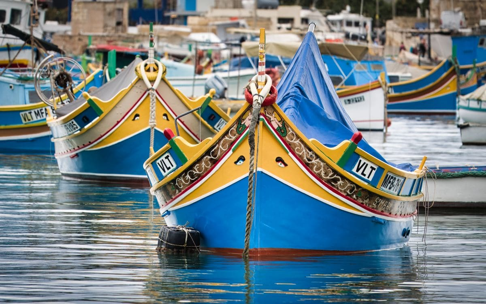
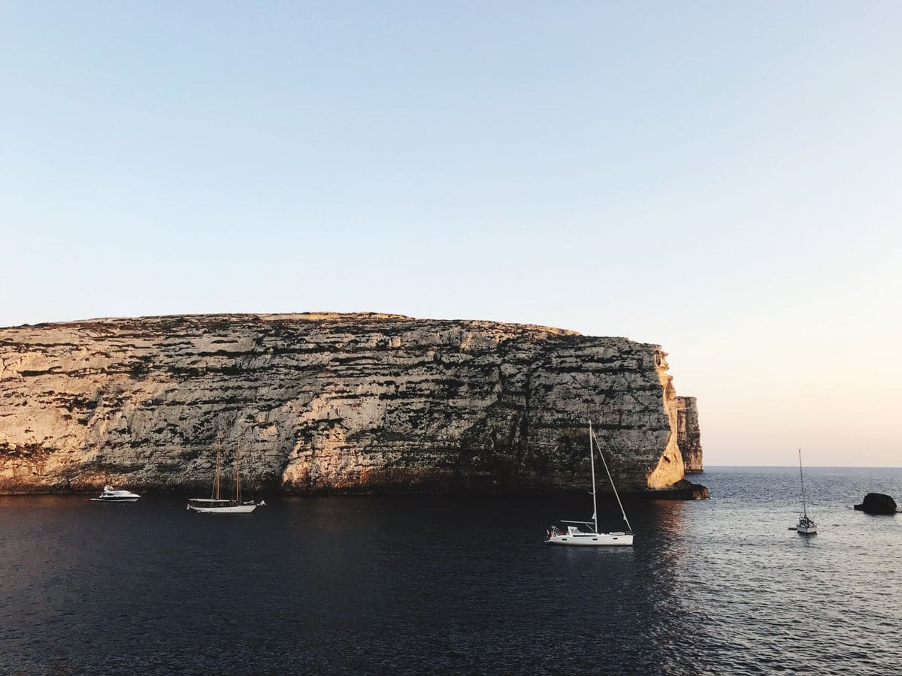
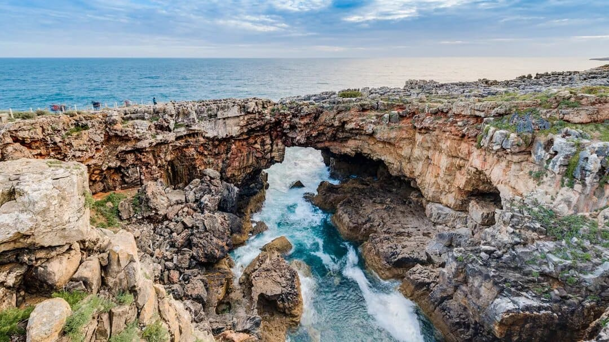


The Plan at a Glance
The route, timing, cost, and appeal score below are recomputed for this composed pairing.
Route
air transfer; 4 planning hours.
Lodging split
Slovenia, then Malta.
Rough all-in
Family-of-four deterministic planning range; live quotes are not yet audited.
Appeal
Budget remains double-weighted; fire safety is included once; PTO remains displayed at weight zero.
The Case for This Route
The destination-local strengths are inherited from reviewed source legs; the combined verdict remains provisional.
Family Highlights
Specific favorites have not been independently tested for this exact pairing.
The source legs contain family-oriented activities, but this composed route still needs a deliberate age-by-age favorites review.
Where We Stay
Base counts and night allocations are composer outputs; exact properties are not selected.
Use the reviewed source leg’s preferred base pattern; property selection remains open.
Use the reviewed source leg’s preferred base pattern; property selection remains open.
Calendar
Dates are generated from the canonical night and blackout model.
Depart
Evening departure model.
Return
Before the 6/24/2027–6/26/2027 Pittsburgh blackout.
Calendar
13 hotel nights.
PTO
Weekdays excluding observed Juneteenth.
Day by Day
Destination days are verified-source content. Transfer boundaries, dates, costs, and the combined ordering remain estimated.
Sun - 6/6/2027
Overnight travel
Airport meals and ground transport
Confirm a protected 2027 itinerary
Mon - 6/7/2027
Soft landing on the lake
Est. $130 · groceries, easy dinner
Ljubljana’s airport is just 30 minutes from Bled, so the trip starts gently: collect the one rental car you keep the whole trip, settle in, and walk the lake to shake off the flights before the island and gorge days.
Tue - 6/8/2027
Island church, pletna, and the clifftop castle
Est. $200 · boat, island, castle, dinner
The postcard day: a pletna boat to the island church and wishing bell, then up to the clifftop castle for the view down the lake. The iconic Slovenia image, and an easy one for the kids.
The pletna boat to the island is €20 adult / €10 child round trip (cash to the pletnar, ~20 min each way plus ~40 min on the island); the island church admission with the wishing bell is €12 adult / €5 child. Bled Castle is about €19 adult / €7 child. A family of four doing all three runs roughly €150 (~$165). Walking the lake shore, ringing nothing, and photographing the island is free.
~1,500 ft, Julian Alps foothills. June highs are a pleasant ~24°C / mid-70s°F with frequent afternoon showers. The lake itself is a swimmable-but-cool ~18–19°C in June — fine for a quick dip off the grassy lidos, not a warm-water day (that waits for Piran).
Family & picky-kid eats
Wed - 6/9/2027
Emerald boardwalk through the canyon
Est. $150 · gorge entry, lunch, dinner
The 1.6 km wooden boardwalk clings to the emerald Radovna over rapids to the Šum waterfall. Buy the timed online pass in advance — there are no tickets at the gate anymore — and go early to beat the buses.
Entry is €15 adult / €5 child (up to 15) — about €40 (~$44) for the family. Since 2025 there are NO tickets at the gorge entrance: you must buy an online timed-slot pass in advance (or on-site only at the P1 Vintgar central parking before the shuttle). Miss your slot and you wait. Open April–October only; helmets are provided and mandatory.
Shaded river canyon. The 1.6 km wooden boardwalk hugs the emerald Radovna over rapids and pools, ending at the Šum waterfall. Cool and often damp underfoot — a smart pick on a warm or showery morning. About 45 minutes one way; fine for both kids, not for strollers.
Family & picky-kid eats
Thu - 6/10/2027
Wilder lake, cable-car panorama, waterfall
Est. $210 · cable car, Savica, dinner
Quieter and wilder than Bled, deep in Triglav National Park: the Vogel cable car for the big peak panorama, the Savica waterfall walk, and a glassy lake for a kayak. Pack a layer for the summit and repack tonight for the Vršič crossing.
Quieter and wilder than Bled, inside Triglav National Park (no park entry fee). The Vogel cable car is about €33 adult / €16 child return for a huge balcony view over the lake to the Triglav massif. Savica Waterfall is a ~€4 walk-in on a stepped path. Kayak or SUP rental on the lake runs ~€15–20/hour. The lakeshore and the stone bridge at Ribčev Laz are free.
Glacial lake, deeper in the park. Bohinj is colder than Bled — high-teens °C water even in June — and can catch mountain cloud. The Vogel top station sits above 1,500 m, so pack a layer even on a warm valley day.
Family & picky-kid eats
Fri - 6/11/2027
Slovenia’s highest road, 50 hairpins
Est. $120 · picnic, hut stop, dinner
The scenic transfer that earns its own day: over the Vršič Pass’s 50 numbered hairpins, past the WWI Russian Chapel and turquoise Lake Jasna, down to the emerald Soča. Check the pass is clear before setting off; if late snow has it shut, loop via Predel/Tarvisio.
Free to drive — the pass is a regional mountain road, so no vignette or toll applies. The only costs are fuel and your nerves on 50 numbered hairpins (24 up from Kranjska Gora, 26 down to the Soča). Budget the whole day for it: the Russian Chapel, the summit, Lake Jasna, and a dozen pull-offs.
1,611 m — Slovenia’s highest road pass. Normally fully open and clear by mid-June, but this is the one real timing risk of the trip: late-lying snow can delay the spring clearing and there is no guaranteed open-by date. Check promet.si and the Erjavčeva koča cameras before committing; the Predel/Tarvisio route is the fallback if it’s shut.
Family & picky-kid eats
Sat - 6/12/2027
Emerald river, rafting, the Great Gorge
Est. $320 · rafting, gorge, dinner
The adventure heart of the trip: guided rafting on the impossibly green Soča (a gentle family stretch for the 8-year-old, the standard run for the 13-year-old), then the free Great Soča Gorge and the easy Kozjak Waterfall walk. Book the water for the morning ahead of afternoon storms.
The impossibly emerald Soča is the heart of the leg. Guided rafting runs roughly €45–80/person plus a ~€6 river permit; standard trips take ages 8+ (the 13-year-old is fine), while a dedicated family/panoramic float suits the 8-year-old. The Great Soča Gorge (Velika korita) has free parking and no entry fee; Kozjak Waterfall is €5 adult / €3 child on an easy 3.3 km forest walk.
Glacial river, cold year-round. The Soča is a stunning ~11–15°C even in summer — perfect for wetsuit rafting, too cold for casual kid swimming beyond a shriek-and-out dip. June valley air is warm; afternoon thunderstorms are common, so book water sports for the morning.
Family & picky-kid eats
Sun - 6/13/2027
Devil’s Bridge and the park’s lowest canyon
Est. $150 · gorge entry, lunch, dinner
A cooler canyon walk to close the Soča leg: the Devil’s Bridge high over the river, the thermal spring at the confluence, and Dante’s Cave. Add the Bovec zipline for the 13-year-old (height/weight limits apply) or the Kobarid museum if it rains.
Entry is €12 adult / €6 child (6–15) in high season — about €36 (~$40) for the family — on a one-hour timed slot. The loop takes in the Devil’s Bridge (60 m above the river), the thermal spring at the Tolminka–Zadlaščica confluence, and Dante’s Cave. Open roughly April–October; it closes only in exceptional high water, and tickets are refundable if it does.
Lowest entry point into Triglav National Park. A cooler, shaded canyon walk — a good hot-afternoon pick. The narrow paths and stairs are fine for both kids but not for strollers. After heavy rain the Tolminka can rise and force a closure, so keep it weather-flexible.
Family & picky-kid eats
Mon - 6/14/2027
Underground canyon, then the Adriatic
Est. $180 · cave tour, transfer, dinner
The Alps-to-coast transition, broken by the UNESCO Škocjan Caves — a vast underground canyon crossed by a footbridge high over the Reka. It sits right on the route to Piran, so it’s a marquee stop, not a detour. Arrive on the coast for the first warm-water evening.
The UNESCO show-stopper on the drive to the coast. The Underground Canyon tour is about €22–24 adult / €12.50 child in summer — roughly €70 (~$77) for the family — with departures around 10:00, 11:30, 13:00, 14:00, 15:00. It’s a 5 km, ~1,000-step, 2.5–3 hr walk crossing the famous Cerkvenik footbridge high above the Reka. Interior is ~12°C; no photography inside.
~12°C underground, year-round. Bring a layer even on a hot coastal day. This is a genuinely strenuous walk, not a stroll, and not stroller-accessible — fine for a capable 8-year-old but a real hike. The early-exit option at the Big Collapse Doline shortens it to ~3 km.
Family & picky-kid eats
Tue - 6/15/2027
Venetian lanes and the first Adriatic swim
Est. $150 · walls, bell tower, taverna
The reward after the mountains: a Venetian peninsula of red roofs and narrow lanes, the town-wall panorama, and the first proper Adriatic swim off the Punta rocks. Warmer and calmer than the Atlantic plans, if honestly a refreshing 72°F rather than tropical.
Wandering Tartini Square, the harbor, and the tangle of Venetian lanes is free. The town walls are €3 adult / €2 student (under-12 free) for the best red-roof panorama; St George’s bell tower is ~€3 to climb its 146 steps. Piran’s own shoreline is rocky bathing platforms with ladders into deep water — the warm-water payoff of the whole trip, if a cooler-than-tropical one.
Northern Adriatic. June air is a warm ~25–28°C / high-70s°F, and the sea is about ~22°C / 72°F — genuinely swimmable but refreshing, not bathwater, especially early June. This is warmer and calmer than the Atlantic beaches on the Portugal-style plans, and the honest ceiling on this trip’s swimming.
Family & picky-kid eats
Wed - 6/16/2027
Flight transfer
Transfer included in slovenia->malta budget
Check out, complete the air transfer, collect the next car if needed, and keep the first evening light.
Thu - 6/17/2027
Warm-water centerpiece
Est. ~$260–520 · boat choice drives cost
This is the water-temperature fix in its purest form. Book the new free Blue Lagoon access pass before you go.
The 2026 visitor system requires a free pre-booked Blue Lagoon pass to step on land, with morning/afternoon/evening slots; commercial boat trips commonly ~€30–45 adult / child discounts.
Air ~80–84°F / 69–71°F. Comino water should be around 73–74°F on 6/21/2027, excellent compared with Portugal and usually calmer/warmer-feeling inside the lagoon.
Family & picky-kid eats
Fri - 6/18/2027
Island towns + beach
Est. ~$220–450 · ferry + driver/taxis + meals
Last full day: enough adventure to feel different, but avoid returning late before the transatlantic flight.
Gozo Channel return foot passenger €4.65 adult; children 3–12 €1.15; pay on return from Gozo. Fast ferry from Valletta is more, about €8.50 one way.
Air ~80–84°F / 69–71°F. Xlendi/Ramla water should be around 73–75°F on 6/22/2027.
Family & picky-kid eats
Sat - 6/19/2027
Weather and energy buffer
Flexible
Keep this day open for weather, rest, or a favorite Malta repeat.
Sun - 6/20/2027
Return flight
Airport meals and transfers
Confirm a protected 2027 itinerary
Mon - 6/21/2027
Trip complete
—
Keep the next full day protected in Pittsburgh.
The Whole Trip, Mapped
Map points are inherited from reviewed source legs; transfer routing remains estimated.
Air Travel
The transfer shape is useful planning information; exact 2027 inventory is not confirmed.
Outbound
Protected gateway itinerary required.
Mid-trip
Confirm the exact 2027 operating day and prefer a protected itinerary where available.
Return
Protected gateway itinerary required.
Getting Around
Local transport assumptions are inherited from leg budgets, but the exact handoffs need review.
First leg
Local transport allowance included in the itemized budget.
Handoff
Confirm baggage, vehicle, and ticket protection rules.
Second leg
Local transport allowance included in the itemized budget.
Entry & Documents
Country-specific entry, driving, health, and connectivity rules have not been merged for this pairing.
Complete the combined-country passport, ETIAS, driving-permit, insurance, medical, money, and connectivity review before booking.
Plan Health-Check
The composer validates structure; a human booking-readiness audit is still outstanding.
Best Time
The blackout constraint is verified; destination-level weather fit has not been re-audited for the exact sequence.
Compare the exact dates against heat, wind, sea temperature, closures, ferry calendars, and destination events for both legs.
Before You Go
The composed route does not yet have a booking calendar.
Build a dated booking order after the flights, transfer edge, lodging bases, and cancellation strategy are audited.
The Money
All rows are deterministic rollups from leg ranges and the selected transfer edge.
| Line item | Estimate (family of 4) |
|---|---|
| Slovenia lodging | $1,530–$2,340 |
| Slovenia car/local transport | $550–$850 |
| Slovenia food | $1,400–$1,900 |
| Slovenia activities | $500–$900 |
| Mid-trip transfer | $1,000–$1,640 |
| Malta lodging | $720–$1,160 |
| Malta car/local transport | $0–$125 |
| Malta food | $725–$1,000 |
| Malta activities | $400–$750 |
| PIT outbound gateway | $2,800–$4,200 |
| PIT return gateway | $2,800–$4,200 |
Bottom Line
This planning range is not a live quote.
| Category | Estimate (family of 4) |
|---|---|
| All itemized composer rows | $12,425–$19,065 |
| Grand total — family of 4 | $12,425–$19,065 |
Re-quote every component before booking. A low Budget score is a warning, never an exclusion.
Travel Tips
Local tips exist in the source legs, but they have not been reconciled into one combination-level booking guide.
Merge the strongest operational notes from both source trips, remove conflicts, and add transfer-specific failure plans.
Packing
Packing tags are inherited from both source legs; the final consolidated list is not audited.
Combine the family baseline with weather, hiking, water, driving, and destination-specific gear requirements for this exact route.
Trip Balance
The split is inferred from leg variety tags rather than audited day categorization.
Decisions
Structural choices are settled; booking choices are not.
Photo Guide
Source imagery is present, but the combined route has no date-specific light plan.
Build sunrise, sunset, blue-hour, access, lens, and weather-backup guidance for every scheduled flagship location.
Food Guide
Restaurant notes exist inside source spots, but the route-wide dining plan is incomplete.
Reconcile current restaurants, grocery access, picky-eater fallbacks, reservation needs, and remote-day food logistics.
Recommendation Readiness
The /55 score describes estimated family appeal; it does not certify a future schedule or live quote.
Deterministically derived from composer hints and rubrics.
Exact 2027 service remains unverified.
Source legs are reviewed; this combination is not.
$12,425–$19,065 planning band.
Recommendation Evidence
No combination-level evidence ledger has been created.
Attach current sources and confidence grades to every score axis, transfer claim, climate claim, and cost proxy.
Trip Variants
Only the canonical composed pair is generated in v1.
Review shorter-night allocations, alternate gateways, and fallback transfer edges before publishing variants.
What People Are Saying
Insider field notes Unverified
No combination-level crowd-source review has been completed.
Review current traveler reports for both legs and the exact transfer, then preserve only actionable, date-relevant advice.